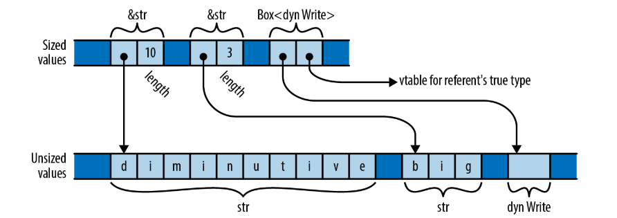

Chapter 13 实用trait
Science is nothing else than the search to discover unity in the wild variety of nature—or, more exactly, in the variety of our experience. Poetry, painting, the arts are the same search, in Coleridge’s phrase, for unity in variety.
——Jacob Bronowski
这一章将介绍Rust中的“实用” trait，它们是标准库中能够显著影响到编写Rust代码的方式的trait，因此你需要熟悉它们才能写出惯用的代码并设计出你的用户会觉得是“Rustic”的crate接口。它们可以分为三大类：
语言扩展trait
正如我们上一章介绍的运算符重载trait可以让你对自己的类型使用Rust的表达式运算符，还有几个其他的标准库trait充当Rust的扩展，让你可以把自己的类型更紧密地集成到语言中。这一类包括Drop、Deref和DerefMut，以及转换用的trait From和Into。我们将在本章介绍所有这些trait。
标记trait
有几个trait通常用于约束泛型参数来表达一些特殊的约束。这一类包括Sized和Copy。
公开的词汇表trait
这些trait并没有神秘的编译器集成，你可以在自己的代码中定义等价的trait。但它们服务于为常见问题制定常规解决方案的重要目标。这些trait在crate和模块之间的公共接口中特别有价值：通过减少不必要的变化，它们让接口更容易理解，它们还增加了不同crate的特性可以简单地集成在一起的可能性，并且无需样板或自定义的粘合代码。这一类包括Default、引用借用trait AsRef、AsMut、Borrow、BorrowMut，可能失败的转换 trait TryFrom和TryInto，以及ToOwned trait，它是Clone的泛化。
表13-1是对它们的总结。
| trait | 说明 |
| Drop | 析构器。当一个值被drop时Rust会自动运行的清理代码。 |
| Sized | 标记trait，标记一个类型有一个编译期已知的固定大小，与动态大小的类型（例如切片）相反。 |
| Clone | 支持克隆的类型。 |
| Copy | 标记trait，标记一个类型可以通过按位拷贝包含值的内存来克隆新值。 |
| Deref与DerefMut | 为智能指针类型准备的trait。 |
| Default | 有一个有意义的“默认值”的类型。 |
| AsRef与AsMut | 用于从一个类型的值借用另一个类型的引用的转换trait。 |
| Borrow与BorrowMut | 转换trait，类似于Asref/AsMut，但额外保证一致的哈希性、顺序性和相等性。 |
| From与Into | 用于将一个类型的值转换为另一个类型的值的转换trait。 |
| TryFrom与TryInto | 用于将一个类型的值转换为另一个类型的值的转换trait，用于可能失败的转换。 |
| ToOwned | 将一个引用转换为一个有所有权的值的转换trait。 |
还有一些其它重要的标准库trait。我们将在第15章中介绍Iterator和IntoIterator。用于计算哈希值的Hash trait将在第16章中介绍。还有一对标记线程安全类型的trait Send和Sync，将在第19章中介绍。
13.1 Drop
当一个值的所有者消失时，我们说Rust drop了这个值。drop一个值意味着释放这个值拥有的所有其他值、堆上的存储空间和系统资源。drop会在各种情况下发生：当变量离开作用域时、处于表达式语句的末尾时、截断vector时从尾部移除元素时，等等。
在大多数情况下，Rust会自动为你处理drop过程。例如，假设你定义了下面的类型：
字符串的内容和vector的元素缓冲区都在堆上分配了空间，Appellation拥有这些空间。当一个Appellation被drop时，Rust会清理所有这些内容，你不需要编写任何代码。然而，如果你想的话，你可以通过实现std::ops::Drop trait来自定义Rust如何drop你的类型的值：
Drop的实现类似于C++中的析构函数，或者其它语言中的终结函数。当一个值被drop时，如果它实现了std::ops::Drop，Rust会在清理它的字段或元素之前先调用它的drop方法。这种drop的隐式调用是唯一一种调用这个方法的方式，如果你尝试显式地调用这个方法，Rust会标记为错误。
因为Rust会在drop一个值的字段或方法之前先用这个值调用Drop::drop，所以这个方法接收到的值总是保持完全初始化的状态。我们的Appellation类型的一个Drop的实现可以充分利用它的字段：
有了这个实现，我们可以写出下列代码：
当我们把第二个Appellation赋给a的时候，第一个值会被drop，当我们离开a的作用域时，第二个值也会被drop。这段代码会打印出如下内容：
既然我们的Appellation的std::ops::Drop实现只打印了一条消息，那么它的内存到底是怎么被精确地清理掉的？Vec类型也实现了Drop，drop它的每个元素，然后释放在堆上分配的缓冲区。一个String在内部使用Vec<u8>来保存文本，因此String自身没有实现Drop，它让它的Vec来清理字符。同样的规则也适用于Appellation值：当一个值被drop时，它的Vec的Drop实现负责清理每一个字符串的内容，并最终释放存储元素的缓冲区。保存Appellation值的内存本身也有一个拥有者，可能是一个局部变量或者一些数据结构，它们负责释放它。
如果一个变量的值被移动走，导致当它离开作用域时是未初始化的状态，那么Rust会避免drop这个变量：它里面没有值可以drop。即使按照控制流一个变量的值可能被移动走、也可能没有的情况下，这个原则也会生效。Rust会使用一个不可见的标记来追踪变量的状态，它指示变量的值是否需要被drop：
根据complicated_condition返回true还是false，p或者q最后将会拥有这个
Appellation，另一个变为未初始化。这个值最终落在哪个变量里决定了它会在println!之前还是之后被drop。因为q在println!之前离开作用域，而p在之后。尽管一个值可能会被移来移去，但Rust只会drop它一次。
你通常不需要实现std::ops::Drop，除非你想定义一个拥有一些Rust不知道的资源的类型。例如，在Unix系统上，Rust的标准库内部使用下面的类型来表示一个操作系统文件描述符：
FileDesc的fd字段就是当程序使用完它之后应该被关闭的文件描述符的序号。c_int是
i32的一个别名。标准库中按照如下方式为FileDesc实现了Drop：
这里，libc::close是C库中的close函数的Rust名称。Rust代码只能在unsafe块中调用C函数，因此这里标准库使用了unsafe块。
如果一个类型实现了Drop，它就不能再实现Copy。如果一个类型是Copy的，那意味着按位复制就可以创建一个新的独立拷贝。但通常在同样的数据上调用同一个drop方法不止一次是一个错误。
换句话说，它以值接收参数，从调用者那里获取所有权——然后什么也不做。当_x离开作用域时Rust会drop它的值，正如它对其他任何变量做的一样。
13.2 Sized
固定大小的类型(sized type)是指那些所有实例值都占用相同大小的内存空间的类型。Rust中几乎所有的类型都是固定大小的：每一个u64都是8字节，每一个(f32, f32, f32)类型的值都占12个字节。即使枚举也是固定大小的：不管它当前实际的variant是哪一个，一个枚举总是占用能存下最大的variant的空间。即使Vec<T>拥有一个大小可变的堆上缓冲区，Vec值本身的大小就是一个缓冲区的指针，加上容量和长度。因此Vec<T>是一个固定大小的类型。
所有的固定大小的类型都实现了std::marker::Sized trait，它没有任何方法或关联类型。Rust为所有适合的类型自动实现它，你不能自己实现它。Sized唯一的用途是作为类型参数的约束：一个类似T: Sized的约束要求T是一个大小在编译期已知的类型。这种类型的trait被称为标记trait(marker trait)，因为Rust语言本身使用它们来标记有特定特点的类型。
然而，Rust还有少量大小不固定的类型(unsized type)，它们的值的大小并不相同。例如，字符串切片类型str（注意，没有&）就是大小不固定的。字符串"diminutive"和"big"分别是占用了10个和3个字节的str切片的引用。如图13-1所示。数组切片类型例如[T]（再次注意，这里也没有&）也是大小不固定的：一个共享引用例如&[u8]可以指向一个任意大小的[u8]切片。因为str和[T]类型表示不同大小的值的集合，因此它们是大小不固定的类型。

Rust中另一种常见的大小不固定类型是dyn类型，它是trait对象引用的目标。正如我们在trait对象中解释的一样，一个trait对象是一个指向实现了给定trait的值的指针。例如，类型&dyn std::io::Write和Box<dyn std::io::Write>是指向实现了Write trait的值的指针。被引用的目标可能是一个文件或者网络套接字，或者是实现了Write的自定义类型。因为实现了Write的类型的集合是开放的，所以dyn Write也是大小不固定的类型：它的值可能有任意的大小。
Rust不能在变量中存储大小不固定的值或者将它们传递为参数。你只能通过指针例如&str或Box<dyn Write>来处理它们，指针本身是固定大小的。正如图13-1所示，一个指向大小不固定的值的指针总是一个胖指针(fat pointer)，占用两个字节：一个指向切片的指针加上切片的长度、一个trait对象加上一个指向方法实现的vtable的指针。
trait对象和切片的指针是对称的。在这两种情况下，都缺乏相应的类型信息：你不能在不知道[u8]长度的情况下索引它，也不能在不知道被指向的值的具体Write实现的情况下调用Box<dyn Write>的方法。在这两种情况下，胖指针填充了类型缺失的信息，加上了一个长度或者vtable的指针。被省略的静态信息被替换为了动态信息。
因为大小不固定的类型限制太多，所以大多数泛型类型参数都被限制为Sized类型。事实上，它几乎总是必须的，因此在Rust中它是默认的：如果你写struct S<T> { ... }，Rust认为你的意思是struct S<T: Sized> { ... }。如果你不想让T有这个约束，你必须显式写出来，即struct S<T: ?Sized> { ... }。?Sized语法专门用于这种场景，含义是“不需要是Sized”。例如，如果你写了struct S<T: ?Sized> { b: Box<T> }，那么Rust将允许你写S<Str>和S<dyn Write>，这时b将是一个胖指针；而S<i32>和S<String>中，b是一个普通指针。
抛开它们的限制不谈，大小不固定的类型让Rust的类型系统工作得更加顺畅。如果阅读标准库的文档，你偶尔会看到类型参数中的?Sized约束，这几乎总是意味着给定的类型只能被指向，同时允许相关的代码既能处理普通类型、又能处理切片和trait对象。当一个类型参数有?Sized约束时，人们通常会说它是可能大小不固定(questionably sized)：它可能是Sized，也可能不是。
除了切片和trait对象之外，还有另一种大小不固定的类型。一个结构体的最后一个字段（也只有最后一个字段）可能是大小不固定的，此时这个结构体本身也是大小不固定的。例如，Rc<T>引用计数指针内部被实现为私有类型RcBox<T>的指针，它存储了T和引用计数。这里有一个RcBox的简化版的定义：
value字段就是Rc<T>引用的T值，Rc<T>解引用之后就是一个这个字段的指针。ref_count
字段保存引用计数。
真正的RcBox是标准库的实现细节，不能用于公开使用。但假设我们在处理一个上面的定义。你可以将RcBox和固定大小的类型一起使用，例如RcBox<String>，结果将是一个固定大小的结构体类型。或者你可以将它和大小不固定的类型一起使用，例如RcBox<dyn std::fmt::Display>（其中Display表示可以被println!以及类似的宏格式化的类型），RcBox<dyn Display>是一个大小不固定的结构体类型。
你不能直接创建一个RcBox<dyn Display>值。你必须先创建一个普通的、固定大小的RcBox，它的value字段的类型需要实现Display，例如RcBox<String>。然后Rust允许你把一个它的引用&RcBox<String>转换为胖指针引用&RcBox<dyn Display>：
当向函数传递参数时会隐式发生这个转换，因此你可以向接受&RcBox<dyn Display>参数的函数传递一个&RcBox<String>：
13.3 Clone
std::clone::Clone trait用于那些可以拷贝自身的类型。Clone的定义如下：
clone方法应该构建一个self的独立拷贝并返回它。因为这个方法的返回类型是Self，并且函数不能返回大小不固定的值，因此Clone trait扩展了Sized trait：它会约束实现的Self类型是Sized。
拷贝一个值通常意味着拷贝它拥有的所有内容，因此clone可能在时间和内存上的开销都比较大。例如，克隆一个Vec<String>不止要拷贝vector，还要拷贝它的每一个String元素。这就是为什么Rust不会自动拷贝值，而是要求你显式地调用方法来拷贝。引用计数指针例如Rc<T>和Arc<T>是例外：拷贝它们只会简单地递增引用计数并返回给你一个新的指针。
clone_from方法将self修改为source的拷贝。clone_from的默认实现简单地拷贝source，然后将它移动进*self。这总是能正确工作，但对于某些类型，还有更快的方法达成相同的效果。例如，假设s和t都是String。语句s = t.clone();必须先克隆t，drop掉s的旧值，然后将克隆的值移动进s，因此这里面有一次堆分配和堆释放。但如果s原本的堆缓冲区有足够的容量存下t的内容，那么没有必要进行释放和分配操作：可以简单地将t的文本拷贝进s的缓冲区，然后调整它的长度。在泛型代码中，你应该使用clone_from，这样可以充分利用优化过的实现的优势。
如果你的类型的Clone实现只是简单地调用每一个字段或者元素的clone方法，然后利用这些克隆的值构造一个新的值，那么clone_from的默认定义就已经够了，Rust将会为你实现它：只要在类型的定义上方加上#[derive(Clone)]。
标准库中几乎所有应该能拷贝的类型都实现了Clone。基本类型例如bool和i32实现了。容器类型例如String, Vec<T>, HashMap也实现了。一些不应该能拷贝的类型例如std::sync::Mutex没有实现Clone。一些类型例如std::fs::File可以拷贝，但如果操作系统没有足够的资源那么拷贝可能会失败，这些类型也没有实现Clone，因为clone不允许失败。作为替代，std::fs::File提供了一个try_clone方法，它返回一个std::io::Result<File>来报告失败。
13.4 Copy
在第4章中，我们解释过，对于大多数类型，赋值操作会移动它的值，而不是拷贝它们。移动值让我们可以更容易地追踪它们拥有的资源。但在Copy类型：move的例外中，我们指出了例外情况：不持有任何资源的简单类型可以是Copy类型，这种类型的赋值操作会拷贝源值，而不是移动值并把源值设为未初始化。
那个时候，我们并没有确切地说明Copy到底是什么，但现在我们可以告诉你：如果一个类型实现了std::marker::Copy标记trait，那么它就是Copy的，Copy的定义如下：
但因为Copy是一个有特殊含义的标记trait，所以Rust只允许可以通过逐字节的浅拷贝来拷贝自身的类型实现Copy。如果一个类型拥有任何其他资源，例如堆缓冲区或者操作系统句柄，那么它将不能实现Copy。
任何实现了Drop trait的类型不能实现Copy。Rust假定如果一个类型需要特殊的清理代码，那么它肯定也需要特殊的拷贝代码，所以不能是Copy。
和Clone一样，你可以使用#[derive(Copy)]来让Rsut为你实现Copy。你通常能一次性看到它们两个，即#[derive(Copy, Clone)]。
在将类型变为Copy之前请仔细思考。尽管这样做会让类型更容易使用，但却对类型本身的实现添加了很大的限制。而且隐式的拷贝可能会有很大的开销。我们已经在Copy类型：move的例外中详细解释了这些因素。
13.5 Deref与DerefMut
你可以通过实现std::ops::Deref和std::ops::DerefMut trait来指定解引用运算符*和.
的行为。像Box<T>和Rc<T>这样的指针类型都实现了这些triat，因此它们的行为可以和Rust内建的指针类型一样。例如，如果你有一个Box<Complex>类型的值b，那么*b就是b指向的Complex值，b.re就是它的实部。如果上下文赋值给被引用的对象，或者借用了被引用对象的可变引用，那么Rust会自动使用DerefMut（“可变地解引用”）trait；否则，只读的访问就已经足够了，所以它会使用Deref。
这个trait的定义类似于这样：
deref和deref_mut方法以Self的引用为参数，并返回Self::Target的引用。Target应该是Self包含、拥有或指向的东西：对于Box<Complex>，Target类型就是Complex。注意DerefMut扩展了Deref：如果你可以解引用某个值并修改它，那么你当然也应该能借用它的共享引用。因为方法返回一个和&self生命周期相同的引用，只要返回的引用还存在，self就会保持被借用的状态。
Deref和DerefMut trait还扮演着另一个角色。因为deref以Self的引用作为参数并返回Self::Target的引用，所以Rust会自动把前者的类型转换为后者。换句话说，如果插入一个deref方法调用可以让类型变得匹配，那么Rust就会自动插入。实现DerefMut允许可变引用的相应转换。这些被称为强制解引用(deref coercions)：一个类型被“强迫”表现得和另一个类型一样。
尽管你也可以自己显式写出转换来代替强制解引用，但它们确实很方便：
-
•
如果你有一个Rc<String>的值r，并想用它调用String::find，你可以简单地写
r.find(’?’)来代替(*r).find(’?’)：这个方法调用隐式地借用r，&Rc<String>被强迫为&String，因为Rc<T>实现了Deref<Target=T>。 -
•
你可以对String值调用类似split_at的方法，即使它原本是str切片类型的方法，这是因为String实现了Deref<Target=str>。没有必要让String重新实现str的所有方法，因为你可以把一个&String强迫为一个&str。
-
•
如果你有一个字节的vector v，然后你想把它传递给一个接受&[u8]字节序列的函数，那你只需要传递&v作为参数，因为Vec<T>实现了Deref<Target=[T]>。
如果需要的话，Rust会尝试多次强制解引用。例如，使用上面提到的强制解引用，你可以直接用Rc<String>调用split_at方法，因为&Rc<String>解引用为&String，它再解引用为&str，而&str有split_at方法。
例如，假设你有下面的类型：
为了让Selector的行为像文档中声明的一样，你必须为它实现Deref和DerefMut：
有了上面的实现之后，你可以像这样使用一个Selector：
Deref和DerefMut trait是为智能指针例如Box, Rc, Arc，以及那些经常以引用的方式使用并且充当另一种类型的类型准备的，例如Vec<T>和String充当[T]和str。你不应该仅仅为了让一个类型能自动使用Target类型的方法（类似于C++的子类可以使用基类的方法）而实现Deref和DerefMut。这可能不会按照你预想的工作，并且当事情变得复杂时可能会变得令人迷惑。
强制解引用有时可能会导致困惑：Rust使用它们来解决类型冲突，但不把它们用于满足类型变量的约束。例如，下面的代码可以正常工作：
在调用show_it(&s)中，Rust看到了一个&Selector<&str>类型的实参，和一个&str类型的形参，然后它发现了Deref<Target=str>实现，并根据需要把调用重写为
show_it(s.deref())。
然而，如果你把show_it改为一个泛型函数，Rust突然变得不配合了：
Rust会报错：
error: `Selector<&str>` doesn't implement `std::fmt::Display` | 33 | fn show_it_generic<T: Display>(thing: T) { println!("{}", thing); } | ------- required by this bound in | `show_it_generic` 34 | show_it_generic(&s); | ^^ | | | `Selector<&str>` cannot be formatted with the | default formatter | help: consider adding dereference here: `&*s` |这可能看起来非常奇怪：为什么把函数改为泛型的就会导致这么一个错误？事实上，Selector<&str>自身没有实现Display，但它可以解引用成&str，后者实现了。
因为你传递了一个&Selector<&str>类型的参数，而函数的形参类型是&T，因此类型参数T必须是Selector<&str>。然后，Rust会检查T: Display约束是否满足：因为Rust不会使用强制解引用来满足类型参数的约束，所以检查会失败。
13.6 Default
一些类型会有一些有意义的默认值：vector或string的默认值就是空，默认的数字是0，默认的Option是None，等等。这样的类型可以实现std::default::Default trait：
default方法简单地返回一个Self类型的新值。例如，String的Default实现非常的直观：
Rust的所有集合类型——Vec, HashMap, BinaryHeap等都实现了Default，它们的
default()方法都返回一个空集合。当你需要创建一个集合来存储一些值，但你希望代码的调用者来决定创建什么类型的集合时这会非常有用。例如，Iterator trait的partition方法把迭代器产生的值划分为两个集合，使用一个闭包来决定每个值被分到哪个集合：
闭包|&n| n & (n-1) == 0使用了位操作来分辨一个数字是不是2的幂，partition使用它来产生两个HashSet。当然，partition并不是只能用于HashSet，你可以用它产生任何类型的集合，只要这个集合实现了Default来创建空的集合，以及Extend<T>来向集合中添加一个T类型的值。String实现了Default和Extend<char>，所以你可以写：
Default的另一个常见用法是为一个结构体生成默认值，它代表一些固定的参数的集合。例如，glium crate为强大且复杂的OpenGL图形库提供Rust绑定。glium::DrawParameters结构体包含24个字段，每一个字段都控制一部分OpenGL渲染图形位的细节。glium里的draw函数接受一个DrawParameters结构体作为参数。因为DrawParameters实现了Default，你可以创建一个默认的值，然后只修改想要修改的字段，最后传给draw：
Default::default()调用创建了一个DrawParameters的默认值，然后使用..语法创建一个新的只有line_width和point_size字段改变了的新值，最后把它传给target.draw。
如果一个类型T实现了Default，那么标准库会自动为Rc<T>、Arc<T>、Box<T>、Cell<T>、RefCell<T>、Cow<T>、Mutex<T>、RwLock<T>实现Default。例如，Rc<T>类型的默认值，是一个类型T的默认值的Rc指针。
如果一个元组类型的所有元素的类型都实现了Default，那么元组也会自动实现Default，它的默认值就是每个元素的默认值组成的元组。
Rust不会隐式为结构体类型实现Default，但如果一个结构体的所有字段都实现了Default，你可以使用#[derive(Default)]来为结构体自动生成Default。
13.7 AsRef与AsMut
如果一个类型实现了AsRef<T>，那么意味着你可以从它高效地借用一个&T。AsMut用于可变引用。它们的定义如下：
例如，Vec<T>实现了AsRef<[T]>，String实现了AsRef<str>。你可以从一个String的内容借用一个字节的数组，因为String也实现了AsRef<[u8]>。
AsRef通常用于让函数在接受参数时更加灵活。例如，std::fs::File::open函数的声明如下：
open真正想要的是一个&Path，这个类型表示一个文件系统路径。但有了这个签名以后，open接受任何可以被借用一个&Path的类型——也就是说，实现了AsRef<Path>的任何类型。这样的类型包括String和str，操作系统接口字符串类型OsString和OsStr、当然还有PathBuf和Path。完整的列表见标准库的文档。它允许你向open传递字符串字面量：
标准库中所有的文件系统函数都用这种方式接受路径参数。对于调用者来说，它的作用就像是C++中重载的函数一样，尽管Rust用了不同的方法来表示可以接受哪些类型的参数。
但只有这些还不够。字符串字面量是&str，但实现了AsRef<Path>的类型是str，没有&。正如我们在Deref与DerefMut一节中解释的一样，Rust不会尝试通过强制解引用来满足类型参数的约束，因此它们也不能解决这个问题。
幸运的是，标准库中包含了全面的实现：
换句话说，对于任意的类型T和U，如果有T: AsRef<U>，那么也会有&T: AsRef<U>：简单地先解引用然后就和之前一样继续。这里，因为有str: AsRef<Path>，所以也会有&str: AsRef<Path>。某种意义上，这是一种在检查类型参数中的AsRef约束时受限的强制解引用方式。
你可能会假设如果一个类型实现了AsRef<T>，那它也应该实现AsMut<T>。然而，还有一些不适合这样的情况。例如，我们提到过String实现了AsRef<[u8]>；这是有意义的，因为每一个String都包含一个字节缓冲区，可以被当做二进制数据访问。然而，String还保证这些字节是有效的UTF-8文本；如果String实现了AsMut<[u8]>，那么调用者将能把String的字节缓冲区修改为任何内容，那么你将不能再信任String里存储的是有效的UTF-8。只有那些修改返回的T不会破坏一致性的类型实现AsMut<T>才有意义。
尽管AsRef和AsMut非常简单，但它提供了一种标准化、泛型的方式来进行引用转换，进而避免了更多特化的转换trait。当实现AsRef<Foo>就足够的时候，你应该避免实现你自己的AsFoo trait。
13.8 Borrow与BorrowMut
std::borrow::Borrow trait和AsRef很相似：如果一个类型实现了Borrow<T>，那么它的borrow方法可以高效地借用一个&T。但Borrow有更多的限制：只有当借用的&T和被借用的值的哈希值和比较方式相同时，这个类型才应该实现Borrow<T>。（Rust并不强迫这一点，这只是这个trait被设计的意图。）这让Borrow在处理哈希表和树的key时非常有用，在处理其他可能会被哈希或者比较的值也很有用。
当从String借用时，这种不同很重要，例如：String实现了AsRef<str>、AsRef<[u8]>、AsRef<Path>，但这三种类型会有不同的哈希值。只有&str保证和等价的String有相同的哈希值，因此String只实现了Borrow<str>。
Borrow被设计用来解决泛型哈希表和其他关联集合类型的特性问题。例如，假设你有一个
std::collections::HashMap<String, i32>，把字符串映射到数字。这个表的key是String，所以每一个表项都拥有一个String。那么在一个这样的表中查找一个表项的方法的签名应该是什么样的？这是第一次尝试：
这么做是有道理的：为了查找一个表项，你必须提供一个和表的key相同的类型。但在这个情况中，K是String，这样的签名会强迫你每次调用get时以值传递一个String，显然这很浪费。你实际上只需要一个key的引用：
这显然很离谱：它在堆上分配了一个String的缓冲区并把文本拷贝进去，然后借用它得到一个&String，传给get之后再drop掉。
如果可以传递任何可以被哈希或者可以与key比较的类型，那么显然会更好。例如，一个&str完美满足条件。因此这是最终的版本，你可以在标准库中找到它：
换句话说，如果你可以将一个表项的key借用为一个&Q，并且引用的哈希值和比较结果就和用key本身所得的结果一样，那么&Q就是一个可以接受的key类型。因为String实现了Borrow<str>和Borrow<String>，所以get的最终版本可以传递&String或者&str作为key。
Vec<T>和[T; N]实现了Borrow<[T]>。每一个类似字符串的类型都允许借用相应的切片类型：String实现了Borrow<str>，PathBuf实现了Borrow<Path>，等等。所有标准库的关联集合类型都使用了Borrow来决定哪些类型可以被传入查找函数。
标准库包含了完备的实现，因此每一个类型T都可以从它自身借用：T: Borrow<T>。这保证了在一个HashMap<K, V>中查找表项时&K总是可接受的类型。
为了方便，每一个&mut T类型也实现了Borrow<T>，返回一个共享引用&T。这允许你直接向集合的查找函数传递可变引用，不需要重新借用共享引用，它模拟了Rust通常把可变引用转换为共享引用的隐式强制解引用。
BorrowMut trait是Borrow的可变引用版本：
Borrow应该满足的条件也适用于BorrowMut。
13.9 From与Into
std::convert::From和std::convert::Into trait代表消耗一个值并返回另一个值的转换。与AsRef和AsMut trait从一个类型借用另一个类型的引用不同，From和Into会获取参数的所有权，对它进行变换，然后把最后的结果的所有权返回给调用着。
它们的定义完美对称：
标准库自动实现每一个类型到自身的转换：每个类型T都实现了From<T>和Into<T>。
尽管这两个trait看起来像是提供了两种不同的方式做同一件事情，但实际上它们用不同的用途。
通常使用Into来让函数可以更灵活的接收参数。例如，如果你写：
那么ping不止可以接受Ipv4Addr作为参数，还可以接受一个u32或者一个[u8; 4]数组，因为这些类型都实现了Into<Ipv4Addr>。（有时把IPv4地址当成单个32位整数或者一个四个字节的数组会很有用）因为ping唯一知道的就是address实现了Into<Ipv4Addr>，所以当你调用into时没有必要指明你想要什么类型。只有一种类型可能成功，所以类型推导会自动为你填充它。
类似于上一节的AsRef，它的效果也很像C++中的重载函数。有了上面的ping定义，我们可以像下面这样调用：
From trait则扮演不同的角色。from方法充当泛型的构造函数，从别的值构造一个该类型的实例。例如，Ipv4Addr简单地实现了From<[u8; 4]>和From<u32>，而不是定义两个名叫from_array和from_u32的方法：
我们可以让类型推导来决定使用哪个实现。
给定一个合适的From实现，标准库会自动生成相应的Into trait的实现。当你定义自己的类型时，如果它需要单个参数的构造函数，你可以将它写成From<T>的实现，而不是定义一个新的构造函数。你可以免费得到相应的Into实现。
因为from和into转换会获取参数的所有权，转换可以重用原始值的资源来构造转换后的值。例如，假设你写了：
String的Into<Vec<u8>>的实现简单地获取String的堆缓冲区的所有权，并重用它作为返回的vector的元素缓冲区。这个转换中不需要分配或拷贝文本。这是另一个使用move来实现高效的方法的例子。
这些转换还提供了一种很好的方式来放松类型的约束，灵活的同时又没有减弱被约束类型的保证。例如，一个String保证它的内容总是有效的UTF-8；它的方法都有很谨慎的限制，来保证你不能引入无效的UTF-8。但这个例子高效地把一个String转换成了一个普通的字节块，你可以对它做任何事：也许你准备压缩它，或者将它和其他不是UTF-8的二进制数据混合。因为into会获取参数的所有权，转换之后text将变为未初始化，这意味着我们可以自由地访问之前的String的缓冲区，而不需要破坏任何现有的String。
然而，低开销的转换并不是Into和From的约定的一部分。与AsRef和AsMut被期望开销很小不同，From和Into转换可能会分配、赋值、或者处理值的内容。例如，String实现了From<&str>，它把字符串切片拷贝到String分配的新的堆上的缓冲区。还有
std::collections::BinaryHeap<T>实现了From<Vec<T>>，它根据算法的要求对元素进行比较和重新排序。
?运算符使用From和Into通过按需将特定的错误类型自动转换为通用的错误类型来帮忙处理函数中可能会失败的代码。
例如，想象一个系统需要读取二进制数据并把其中一部分被写作UTF-8文本的10进制数字转换回数字。这意味着要使用std::str::from_utf8和i32的FromStr实现，它们可能会返回不同类型的错误。假设我们使用了在第7章中定义的GenericError和GenericResult类型，那么?运算符将会为我们做这个转换：
类似大多数错误类型，Utf8Error和ParseIntError实现了Error trait，并且标准库给了我们完备的From impl来把任何实现了Error的类型转换为Box<dyn Error>，?将会自动使用它：
它将原本需要两个match语句的复杂函数转变为只需要一行。
在From和Into被添加进标准库中之前，Rust代码中充满了单独的转换trait和构造方法，每一个都用于单个类型。From提供了标准的转换方式，你可以使用它们来让你的类型更加易于使用，因为你的用户已经对它们很熟悉了。其他的库和语言本身也可以使用这些trait作为约定的、标准的方式来处理转换。
From和Into是不可失败的trait——它们的API要求转换不能失败。不幸的是，很多转换更加复杂。例如，大整数例如i64可以存储比i32大很多的数字，将一个类似
2_000_000_000_000i64这样的数字转换为i32没有意义。如果直接把前32位丢掉，那么并不会总是返回我们期望的结果：
有很多处理这种问题的方法。取决于上下文，这种“折断”的方式也可能很合适。另一方面，数字信号处理和控制系统等应用通常可以使用“饱和”转换：超过最大可表示的值的数字会被限制为可表示的最大值。
13.10 TryFrom与TryInto
因为这种转换到底该怎么做并不是很清楚，所以Rust并没有为i32实现From<i64>，也没有实现任何其他可能丢失信息的数制转换。作为代替，i32实现了TryFrom<i64>。TryFrom和TryInto是From和Into的可能失败的版本，实现TryFrom意味着TryInto也会自动实现。
它们的定义只比From和Into复杂一点：
try_into()方法返回一个Result，因此我们可以选择在失败的情况下做什么，例如一个数字太大不能存放在结果类型中：
如果我们想同时处理负数的情况，我们可以使用Result的unwrap_or_else()的方法：
为你自己的类型实现可能失败的转换也非常简单。Error类型既可以很简单，也可以像某个应用的需求一样复杂。这里标准库使用了一个空的结构体，没有提供转换失败的原因相关的信息，因为唯一可能失败的原因就是溢出。另一方面，在更复杂的类型之间转换可能会需要返回更多的信息：
From和Into将只需要简单的转换的类型联系起来，TryFrom和TryInto用Result的强大的错误处理能力扩展了From和Into的简单转换。这四个trait可以一起使用来联系一个crate中的多种类型。
13.11 ToOwned
给定一个引用，产生一个有所有权的拷贝的通常方式是调用clone，假设这个类型实现了std::clone::Clone。但如果你想拷贝一个&str或者一个&[i32]呢？你想要的可能是一个String或者一个Vec<i32>，但Clone的定义不允许那样做：从定义上讲，拷贝一个&T必须返回一个T类型的值，而str和[u8]是大小不固定的，它们甚至不能作为函数的返回类型。
std::borrow::ToOwned trait提供了一种更简单的方式来把一个引用转换成一个有所有权的值：
与clone必须返回Self不同，to_owned可以返回任何你可能借用一个&Self的对象：Owned类型必须实现了Borrow<Self>。你可以从Vec<T>借用一个&[T]，所以[T]可以实现ToOwned<Owned=Vec<T>>，只要T实现了Clone，因此我们可以把切片的元素拷贝进vector中。类似的，str实现了ToOwned<Owned=String>，Path实现了ToOwned<Owned=PathBuf>，等等。
13.12 Borrow和ToOwned的配合：Cow
想用好Rust就必须想好所有权的问题、例如一个函数应该以值还是以引用接受参数。通常你可以选择其中一种，并且类型的参数反应出了你的决定。但在某些情况下，在程序实际运行之前你都不能决定到底是借用还是拥有；std::borrow::Cow类型（用于“写时克隆”）提供了一个处理这种情况的方法。
它的定义如下所示：
一个Cow<B>可能是一个B的一个共享引用，也可能拥有一个我们可以借用到这样一个引用的值。因为Cow实现了Deref，你可以将它当做B的共享引用来调用方法；如果它是Owned，它会借用一个拥有的值的共享引用；如果它是Borrowed，它直接使用它存储的引用。
你也可以通过调用to_mut方法来获取一个Cow值的可变引用，它会返回一个&mut B。如果Cow恰巧是Cow::Borrowed，to_mut简单地调用to_owned方法来获取它引用的值的拷贝，然后把Cow修改为Cow::Owned，然后借用新的拥有的值的可变引用。这是这个类型的名字表示的“写时克隆”的行为。
类似的，Cow还有一个into_owned方法，如果需要的话它会通过引用拷贝一个值，然后返回它，把所有权移动给调用者，然后在这个过程中消耗掉Cow。
Cow的一个常见用途是返回一个静态分配的字符串常量或者一个计算之后得到的字符串。例如，假设你需要把一个表示错误的枚举转换为消息，其中大多数variant都用固定的字符串来处理，但有些variant应该在消息里包含一些数据。你可以返回一个Cow<’static str>：
use std::path::PathBuf; use std::borrow::Cow; fn describe(error: &Error) -> Cow<'static, str> { match *error { Error::OutOfMemory => "out of memory".into(), Error::StackOverflow => "stack overflow".into(), Error::MachineOnFire => "machine on fire".into(), Error::Unfathomable => "machine bewildered".into(), Error::FileNotFound(ref path) => { format!("file not found: {}", path.display()).into() } } }这段代码使用了Into的Cow实现来构造值。这个match语句的大多数分支都返回一个指向静态分配字符串的Cow::Borrowed。但当我们到达FileNotFound variant时，我们使用了format!来构造一个插入了给定文件名的消息。这个match语句的分支会产生一个Cow::Owned值。
如果调用者需要一个拥有所有权的值，那么它可以产生一个：
使用Cow可以帮助describe和它的调用者推迟内存分配，直到必须进行分配的时候。